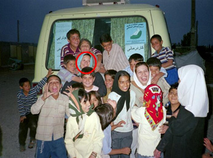

|
|

وكيل دلآرام علي خبر داد: دستور توقف اجراي حكم موكلم صادر شد
شنبه19 آبان 1386
خبرگزاري دانشجويان ايران - تهران ، سرويس: فقه و حقوق - حقوق سياسي- وكيل مدافع دلآرام علي (از متهمان پروندهي تجمع 22خرداد) گفت: صبح امروز با مراجعه به قوه قضاييه و دفتر سخنگوي مطلع شدم كه دستور توقف اجراي حكم موكلم براي بررسي مجدد پرونده صادر شده است.
نسرين ستوده در گفتوگو با خبرنگار حقوقي خبرگزاري دانشجويان ايران(ايسنا)، اظهار داشت: پيش از اين موكلم در نامه اي به رييس قوه قضاييه توقف اجراي حكم خود را خواستار شده بود.

وي افزود: يكي از ايرادات وارد بر حكم صادره اين است كه اين حكم حتي به رويت موكلم نرسيده و پيش از آن تماسي از اجراي احكام گرفته شده تا موكلم خود را معرفي كند و موكل تنها طبق اعلام كارمند اجراي احكام از محتويات حكم تجديد نظر خود مطلع شده است.
به گزارش ايسنا، دلآرام علي از سوي شعبهي 15 دادگاه انقلاب به دو سال و 10 ماه حبس تعزيري و ده ضربه شلاق محكوم شده بود كه شعبهي 36 دادگاه تجديد نظر دو سال و شش ماه از حبس وي را مورد تاييد قرار داد.